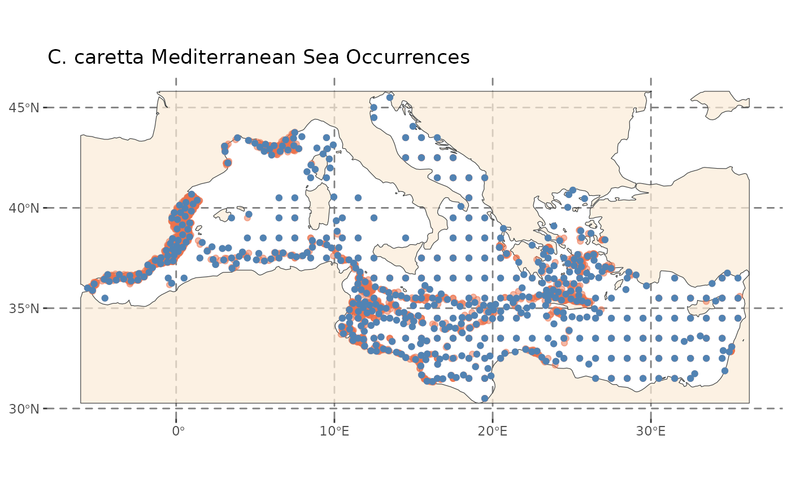
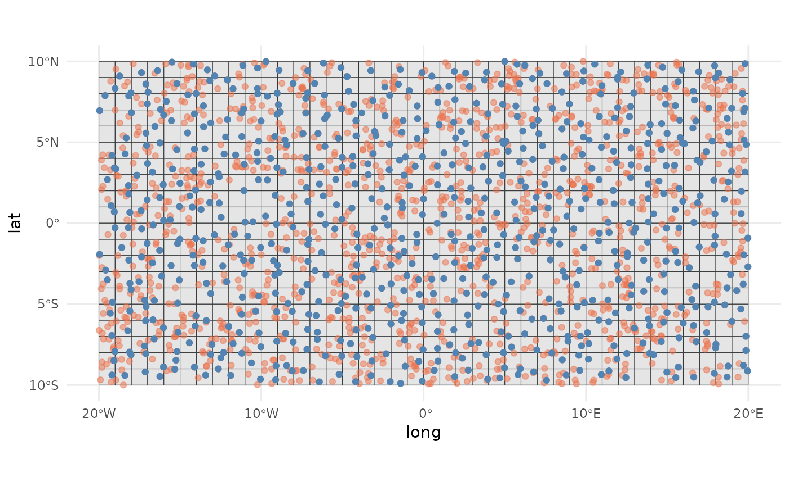
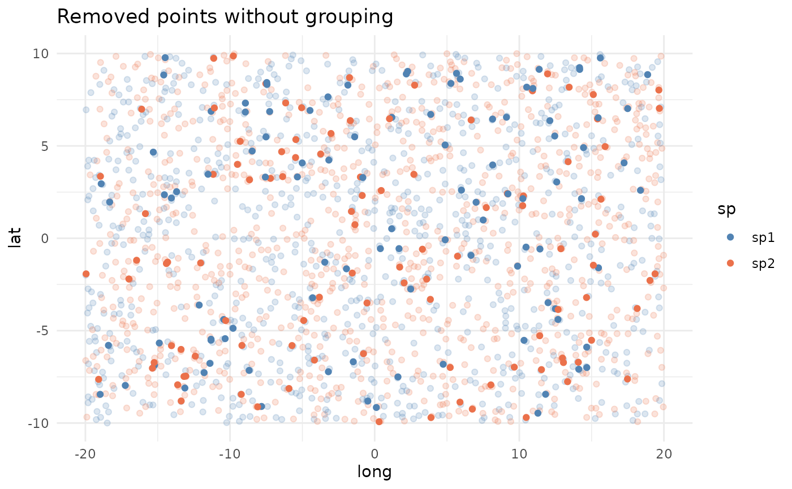
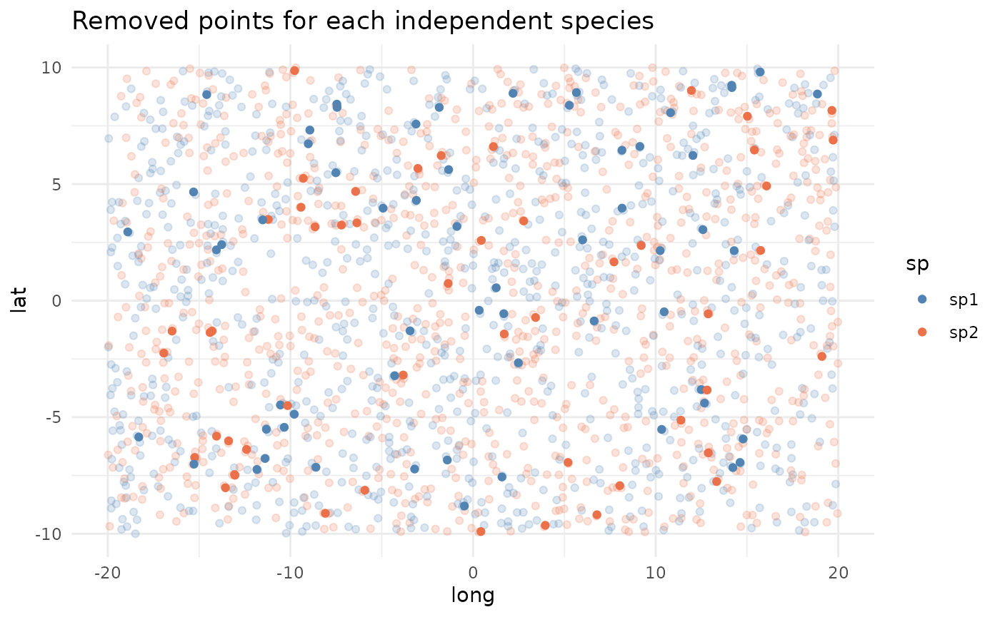
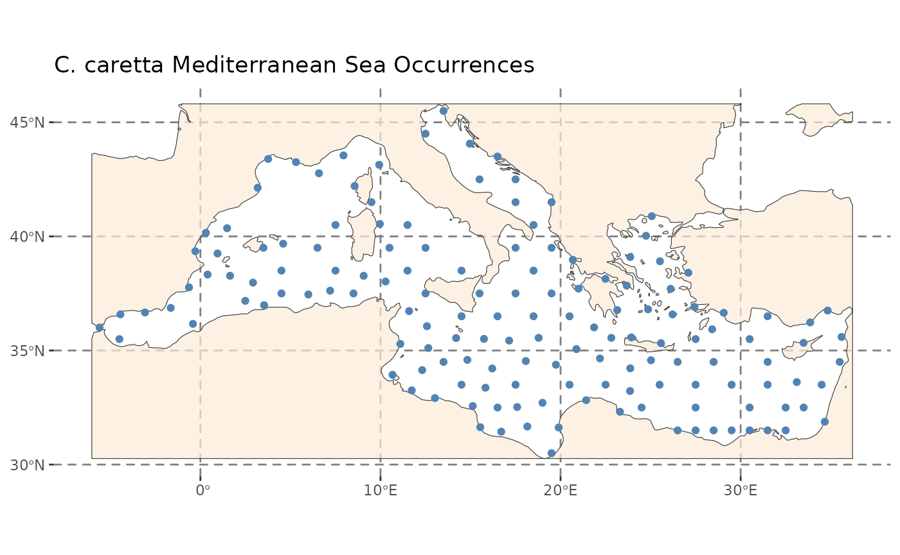

A collection of simple methods for spatial thinning of species occurrences and point data
Source:vignettes/GeoThinneR.Rmd
GeoThinneR.RmdOverview
Loading occurrence data in R for species distribution modeling or other types of point data analysis is an easy task that can become tedious when dealing with uncertain records or sampling bias. Spatial thinning methods can be helpful in some situations for reducing sampling bias while retaining a significant number of points or a specific desired count.
The GeoThinneR package offers a collection of straightforward and effective methods for spatial thinning of species occurrences and other point data, allowing researchers to improve the quality of their datasets.
This package includes a main function (thin_points) that
wraps various methods (specified by the method parameter)
for spatial thinning, including:
- Distance-based methods:
- Brute force distance thinning (
"brute_force") - K-D trees thinning (
"kd_tree") - R-trees thinning (
"r_tree") - Rounding and hashing (
"round_hash")
- Brute force distance thinning (
- Regular grid-based methods:
- Grid sampling (
"grid")
- Grid sampling (
- Coordinate precision-based methods:
- Precision thinning (
"precision")
- Precision thinning (
This variety allows users to select the most suitable approach based on their specific datasets and research objectives.
In this vignette, we provide an overview of the key functionalities of the package and demonstrate how to use the various thinning methods along with advanced options.
Setup and load datasets
To get started with GeoThinneR, we will also load the following packages:
- terra: for working with raster and spatial data.
- sf: for handling spatial polygons.
- ggplot2: for visualizing the thinning process.
We will simulate a dataset with n = 2000 random points
for two species and load a subset of real data from the Logerhead sea
turtle (Caretta caretta) occurrences in the Mediterranean
Sea.
# Set seed for reproducibility
set.seed(123)
# Simulate the dataset
n <- 2000 # Number of points
sim_data <- data.frame(
long = runif(n, min = -20, max = 20),
lat = runif(n, min = -10, max = 10),
sp = sample(c("sp1", "sp2"), n, replace = TRUE)
)
# Load the Caretta caretta occurrences
data("caretta")
# Load mediterranean sea polygon
medit <- system.file("extdata", "mediterranean_sea.gpkg", package = "GeoThinneR")
medit <- sf::st_read(medit)
ggplot() +
geom_point(data = sim_data, aes(x = long, y = lat, color = sp)) +
scale_color_manual(values = c(sp1 = "#5183B3", sp2 = "#EB714B")) +
xlab("Longitude") + ylab("Latitude") +
ggtitle("Simulated Species Occurrences") +
theme_minimal()
ggplot() +
geom_sf(data = medit, color = "#353839", fill = "antiquewhite", alpha = 0.7) +
geom_point(data = caretta, aes(x = decimalLongitude, y = decimalLatitude),color = "#EB714B", alpha = 1) +
xlab("Longitude") + ylab("Latitude") +
ggtitle("C. caretta Mediterranean Sea Occurrences") +
theme(
panel.grid.major = element_line(color = gray(.5),linetype = "dashed",linewidth = 0.5),
panel.background = element_rect(fill = "white"),
axis.title = element_blank(),
legend.position = "bottom"
)

Quick start guide
Now that we have loaded our data, let’s quickly explore how to use
the thin_points() function to perform spatial thinning on
our datasets.
Let’s start by applying spatial thinning to our simulated dataset
using the brute force distance thinning method. We pass our
dataframe/tibble/matrix through the data argument, and with
lon_col and lat_col, we can define the names
of the columns containing longitude and latitude (or x, y) coordinates.
If you don’t specify any columns, it will take the first two columns by
default. We will use the brute force algorithm
(brute_force) specified in the method
parameter and set a thinning distance (thin_dist) of 20 km.
Since this is not a deterministic approach, we will run 5 iterations
(trials) and return all the iterations
(all_trials).
# Apply spatial thinning to the simulated data
thin_sim_data <- thin_points(
data = sim_data, # Dataframe with coordinates
long_col = "long", # Longitude column name
lat_col = "lat", # Latitude column name
method = "brute_force", # Method for thinning
thin_dist = 20, # Thinning distance in km,
trials = 5, # Number of reps
all_trials = TRUE, # Return all trials
seed = 123 # Seed for reproducibility
)We can see that out of every 5 trials, there is one that returns one point less. This is due to the randomness of the algorithm.
# Number of keeped points in each trial
sapply(thin_sim_data, nrow)
#> [1] 1795 1794 1795 1795 1795Next, we will thin the Caretta caretta occurrences using the
K-D trees method. We’ll use a thinning distance of 30 km and return only
the trial with the most points kept (all_trials set to
FALSE).
# Apply spatial thinning to the real data
thin_real_data <- thin_points(
data = caretta, # We will not specify long_col, lat_col as they are in position 1 and 2
method = "kd_tree",
thin_dist = 30, # Thinning distance in km,
trials = 5,
all_trials = FALSE,
seed = 123
)
# Thinned dataframe stored in the first element of the output list
dim(thin_real_data[[1]])
#> [1] 520 5
As you can see, with GeoThinneR, it’s very easy to apply spatial thinning to your dataset. As you will see in the next sections, there are a variety of options and methods that best suit different situations. You will learn how to use each specific method with its own options, how to thin groups separately, how to request a specific number of points, how to select less uncertain points, and how to work with points that do not represent longitude and latitude coordinates.
Thinning methods
In this section, we will show how to use each thinning method, highlighting its unique parameters and features.
Distance-based methods
All distance-based methods apply spatial thinning based on an exact
distance defined by the thin_dist parameter. When using
longitude and latitude data, the function computes the Haversine
distance. You can also pass a custom Earth radius using the
R parameter (by default, it uses 6371 km).
Brute force distance thinning
This is the most common method for calculating the distance between
points, as it directly computes all pairwise distances and retains
points that are far enough apart based on the thinning distance. By
default, it computes the Haversine distance using the
RdistEarth function from the fields
package. If euclidean is set to TRUE, it will
compute the Euclidean distance instead. The main advantage of this
method is that it computes the full picture of your points, making it
easier to retain the maximum number of points. However, the primary
drawback is that it is very time and memory consuming, as it requires
computing all pairwise comparisons.
system.time(
thin_sim_data <- thin_points(
data = sim_data,
method = "brute_force",
thin_dist = 20,
trials = 50,
all_trials = FALSE,
seed = 123
))
#> user system elapsed
#> 0.313 0.004 0.317
nrow(thin_sim_data[[1]])
#> [1] 1795K-D trees
K-D trees are a well-known data structure for partitioning space
during nearest neighbor searches, making them an efficient option for
distance-based thinning. A K-D tree is a binary treeof k
dimensions that partitions the space to discard data points that are
further away. This method uses the nabor R package to
implement K-D trees via the libnabo library. Since K-D
trees are based on Euclidean distance, if euclidean is set
to FALSE to work with longitude and latitude data,
GeoThinneR will transform the coordinates into XYZ
Cartesian coordinates. Additionally, by setting
space_partitioning to TRUE, the space will be
divided into grids before computing the K-D tree, which can be more
memory-efficient for large datasets.
system.time(
thin_sim_data <- thin_points(
data = sim_data,
method = "kd_tree",
thin_dist = 20,
trials = 50,
all_trials = FALSE,
seed = 123
))
#> user system elapsed
#> 0.189 0.000 0.190
nrow(thin_sim_data[[1]])
#> [1] 1795R-trees
R-trees are widely used for spatial searching, especially with
geographic coordinates. While R-trees have a slightly higher
construction cost compared to other methods, they speed up searches.
This method uses the same parameters as the K-D tree method. In
GeoThinneR, R-trees are implemented as a slightly
modified version of the rtree R package, which is based
on the Boost geometry library. In order to use R-tree
you need to install the modified package from GitHub using
remotes::install_github("jmestret/rtree"). This
modification allows for computing both Euclidean distance
(euclidean = TRUE) and Haversine distance
(euclidean = FALSE) for geographic coordinates.
system.time(
thin_sim_data <- thin_points(
data = sim_data,
method = "r_tree",
thin_dist = 20,
trials = 50,
all_trials = FALSE,
seed = 123
))
nrow(thin_sim_data[[1]])Rounding and hashing
This method reduces data complexity and is particularly useful in specific scenarios. First, the coordinates of the data points are rounded to a specified precision based on the thinning distance. The rounded coordinates are then hashed into a grid where each cell is identified by a unique combination of longitude and latitude values. The algorithm iterates through the grid cells, checking the distance between points within the same cell and neighboring cells, and removes points that fall within the thinning distance. This method can also be seen as a form of precision-based thinning.
The distance between points can be calculated using either the Haversine or Euclidean formula. This method is very memory-efficient and fast, especially with large datasets and large thinning distances. However, the main drawback is that it usually does not find the optimal maximum number of points to retain, as it removes them without computing all distances.
system.time(
thin_sim_data <- thin_points(
data = sim_data,
method = "round_hash",
thin_dist = 20,
trials = 50,
all_trials = FALSE,
seed = 123
))
#> user system elapsed
#> 0.078 0.000 0.078
nrow(thin_sim_data[[1]])
#> [1] 1790Grid-based methods
Grid sampling
Grid sampling is a standard method where the area is divided into a
grid, and points are sampled from each grid cell. This method is very
fast and memory-efficient. There are two main ways to apply grid
sampling: (i) Define the characteristics of the grid, and (ii) pass your
own grid as a raster (SpatRaster).
For the first method, you can use the thin_dist
parameter to define the grid cell size (the distance in km will be
approximated to degrees to define the grid cell size), or you can pass
the resolution of the grid (e.g., resolution = 0.25 for
0.25x0.25-degree cells). If you want to align the grid with external
data or covariate layers, you can pass the origin argument
as a tuple of two values (e.g., c(0, 0)). Similarly, you
can specify the coordinate reference system (CRS) of your grid
(crs).
system.time(
thin_sim_data <- thin_points(
data = sim_data,
method = "grid",
resolution = 1,
origin = c(0, 0),
crs = "epsg:4326",
trials = 50,
all_trials = FALSE,
seed = 123
))
#> user system elapsed
#> 0.046 0.004 0.050Alternatively, you can pass a SpatRaster object, and
that grid will be used for the thinning process.
rast_obj <- terra::rast(xmin = -20, xmax = 20, ymin = -10, ymax = 10, res = 1)
system.time(
thin_sim_data <- thin_points(
data = sim_data,
method = "grid",
raster_obj = rast_obj,
trials = 50,
all_trials = FALSE,
seed = 123
))
#> user system elapsed
#> 0.002 0.000 0.002
Coordinate Precision-Based Methods
Precision Thinning
In this approach, coordinates are rounded to a certain precision to
remove points that fall too close together. After removing points based
on coordinate precision, the coordinate values are restored to their
original locations. This is the simplest method and is very useful when
working with data from different sources with varying coordinate
precisions. To use it, you need to define the precision
parameter, indicating the number of decimals to which the coordinates
should be rounded.
system.time(
thin_sim_data <- thin_points(
data = sim_data,
method = "precision",
precision = 0,
trials = 50,
all_trials = FALSE,
seed = 123
))
#> user system elapsed
#> 0.003 0.000 0.003
nrow(thin_sim_data[[1]])
#> [1] 775These are the methods implemented in GeoThinneR. Depending on your specific dataset and research needs, one method may be more suitable than others.
Additional features
Spatial thinning by group
In some cases, your dataset may include different groups, such as
species, time periods, areas, or conditions, that you want to thin
independently. The group_col parameter allows you to
specify the column containing the grouping factor, and the thinning will
be performed separately for each group. For example, in the simulated
data where we have two species, we can use this parameter to thin each
species independently:
thin_sim_data <- thin_points(
data = sim_data,
thin_dist = 20,
seed = 123
)
thin_sim_data_group <- thin_points(
data = sim_data,
group_col = "sp",
thin_dist = 20,
seed = 123
)
nrow(thin_sim_data[[1]])
#> [1] 1795
nrow(thin_sim_data_group[[1]])
#> [1] 1889
Fixed number of points
What if you need to retain a fixed number of points that best covers
the area where your data points are located? The
target_points parameter allows you to specify the number of
points to keep, and the function will return that number of points
spaced as separated as possible. Additionally, you can also set a
thin_dist parameter so that no points closer than this
distance will be retained. Currently, this approach is only implemented
using the brute force method, so be cautious when applying it to very
large datasets.
thin_real_data <- thin_points(
data = caretta,
target_points = 150,
thin_dist = 30,
all_trials = FALSE,
seed = 123,
verbose = TRUE
)
#> Starting spatial thinning at 2024-09-02 20:35:55
#> For specific target points, brute force method is used.
#> Total execution time: 2.57 seconds
nrow(thin_real_data[[1]])
#> [1] 150
ggplot() +
geom_sf(data = medit, color = "#353839", fill = "antiquewhite", alpha = 0.7) +
geom_point(data = thin_real_data[[1]], aes(x = long, y = lat),color = "#5183B3", alpha = 1) +
xlab("Longitude") + ylab("Latitude") +
ggtitle("C. caretta Mediterranean Sea Occurrences") +
theme(
panel.grid.major = element_line(color = gray(.5),linetype = "dashed",linewidth = 0.5),
panel.background = element_rect(fill = "white"),
axis.title = element_blank(),
legend.position = "bottom"
)
Select points by priority
In some scenarios, you may want to prioritize certain points based on
a specific criterion, such as uncertainty, data quality, or recency. The
priority parameter allows you to pass a vector representing
the priority of each point. Currently, this feature can be used with the
grid and precision methods. You can use this
argument to prioritize points based on any criteria, such as
uncertainty, year of observation, or data quality.
For example, in the sea turtle data downloaded from GBIF, there is a
column named coordinateUncertaintyInMeters. We can use this
to prioritize points with lower uncertainty within each grid cell (in
the grid method) or when rounding coordinates (in the
precision method). Keep in mind that bigger uncertainty
values represent less priority so we have to reverse this values.
thin_real_data <- thin_points(
data = caretta,
method = "precision",
precision = 0,
seed = 123
)
# Substracting the maximum - the highest uncertainty becomes the lowest priority and vice versa.
priority <- max(caretta$coordinateUncertaintyInMeters) - caretta$coordinateUncertaintyInMeters
thin_real_data_uncert <- thin_points(
data = caretta,
method = "precision",
precision = 0,
priority = priority,
seed = 123
)
mean(thin_real_data[[1]]$coordinateUncertaintyInMeters)
#> [1] 35557.72
mean(thin_real_data_uncert[[1]]$coordinateUncertaintyInMeters)
#> [1] 21235.14Other Packages
The GeoThinneR package was inspired by the work of many others who have developed methods and packages for working with spatial data and thinning techniques. Our goal with GeoThinneR is to offer additional flexibility in method selection and to address specific needs we encountered while using other packages. We would like to acknowledge and mention other tools that may be suitable for your work:
-
spThin: The
thinfunction provides a brute-force spatial thinning of data, maximizing the number of retained points through random iterative repetitions, using the Haversine distance. -
enmSdmX: Includes the
geoThinfunction, which calculates all pairwise distances between points for thinning purposes. -
dismo: The
gridSamplefunction samples points using a grid as stratification, providing an efficient method for spatial thinning.
References
Aiello‐Lammens, M. E., Boria, R. A., Radosavljevic, A., Vilela, B., and Anderson, R. P. (2015). spThin: an R package for spatial thinning of species occurrence records for use in ecological niche models. Ecography, 38(5), 541-545.
Elseberg, J., Magnenat, S., Siegwart, R., & Nüchter, A. (2012). Comparison of nearest-neighbor-search strategies and implementations for efficient shape registration. Journal of Software Engineering for Robotics, 3(1), 2-12.
Hijmans, R.J., Phillips, S., Leathwick, J., & Elith, J. (2023). dismo: Species Distribution Modeling. R Package Version 1.3-14. https://cran.r-project.org/package=dismo
Johnson, K., & Hunziker, P. (2021). rtree: R-Trees for point data in R. R Package Version 0.2.0. https://github.com/akoyabio/rtree
Smith, A. B., Murphy, S. J., Henderson, D., & Erickson, K. D. (2023). Including imprecisely georeferenced specimens improves accuracy of species distribution models and estimates of niche breadth. Global Ecology and Biogeography, 32(3), 342-355.
Session Info
sessionInfo()
#> R version 4.4.1 (2024-06-14)
#> Platform: x86_64-pc-linux-gnu
#> Running under: Ubuntu 22.04.4 LTS
#>
#> Matrix products: default
#> BLAS: /usr/lib/x86_64-linux-gnu/openblas-pthread/libblas.so.3
#> LAPACK: /usr/lib/x86_64-linux-gnu/openblas-pthread/libopenblasp-r0.3.20.so; LAPACK version 3.10.0
#>
#> locale:
#> [1] LC_CTYPE=C.UTF-8 LC_NUMERIC=C LC_TIME=C.UTF-8
#> [4] LC_COLLATE=C.UTF-8 LC_MONETARY=C.UTF-8 LC_MESSAGES=C.UTF-8
#> [7] LC_PAPER=C.UTF-8 LC_NAME=C LC_ADDRESS=C
#> [10] LC_TELEPHONE=C LC_MEASUREMENT=C.UTF-8 LC_IDENTIFICATION=C
#>
#> time zone: UTC
#> tzcode source: system (glibc)
#>
#> attached base packages:
#> [1] stats graphics grDevices utils datasets methods base
#>
#> other attached packages:
#> [1] ggplot2_3.5.1 sf_1.0-16 terra_1.7-78 GeoThinneR_1.0.0
#>
#> loaded via a namespace (and not attached):
#> [1] sass_0.4.9 utf8_1.2.4 class_7.3-22 KernSmooth_2.23-24
#> [5] digest_0.6.37 magrittr_2.0.3 evaluate_0.24.0 grid_4.4.1
#> [9] fastmap_1.2.0 maps_3.4.2 jsonlite_1.8.8 e1071_1.7-14
#> [13] DBI_1.2.3 spam_2.10-0 fansi_1.0.6 viridisLite_0.4.2
#> [17] scales_1.3.0 codetools_0.2-20 textshaping_0.4.0 jquerylib_0.1.4
#> [21] cli_3.6.3 rlang_1.1.4 units_0.8-5 munsell_0.5.1
#> [25] withr_3.0.1 cachem_1.1.0 yaml_2.3.10 tools_4.4.1
#> [29] colorspace_2.1-1 vctrs_0.6.5 R6_2.5.1 matrixStats_1.3.0
#> [33] nabor_0.5.0 proxy_0.4-27 lifecycle_1.0.4 classInt_0.4-10
#> [37] fs_1.6.4 ragg_1.3.2 pkgconfig_2.0.3 desc_1.4.3
#> [41] pkgdown_2.1.0 pillar_1.9.0 bslib_0.8.0 gtable_0.3.5
#> [45] data.table_1.16.0 glue_1.7.0 Rcpp_1.0.13 fields_16.2
#> [49] systemfonts_1.1.0 xfun_0.47 tibble_3.2.1 highr_0.11
#> [53] knitr_1.48 farver_2.1.2 htmltools_0.5.8.1 rmarkdown_2.28
#> [57] labeling_0.4.3 dotCall64_1.1-1 compiler_4.4.1